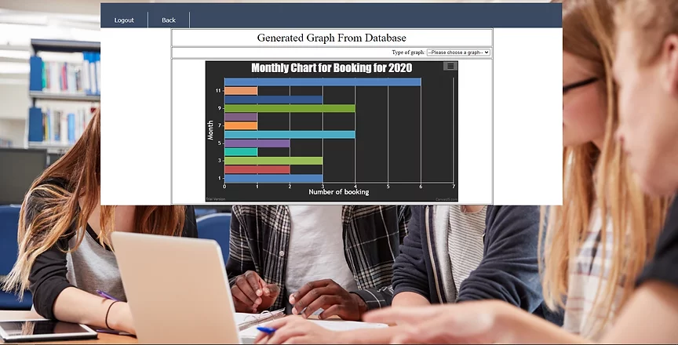

Tutor Finder Application
Tutor finder is an application developed to make finding tutor for students much easier and faster. Tutor finder is developed using HTML, SQL, PHP and Javascript language. The 2 key objectives for this project are to create a platform for students to find a tutor online, and to provide more work opportunity for tutor.
